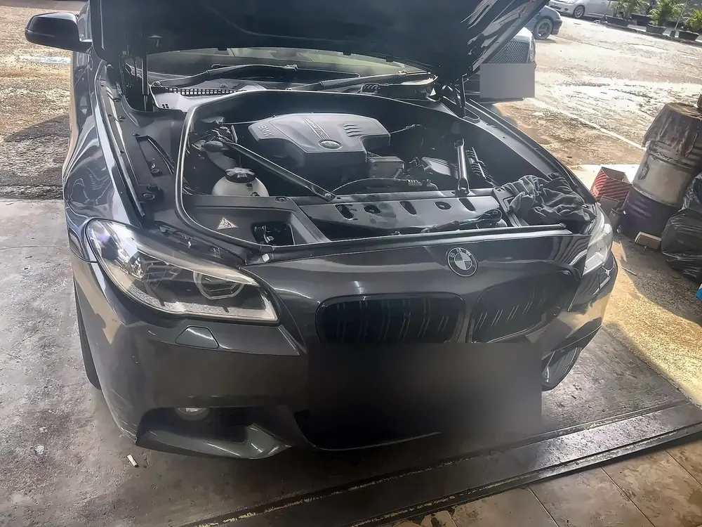
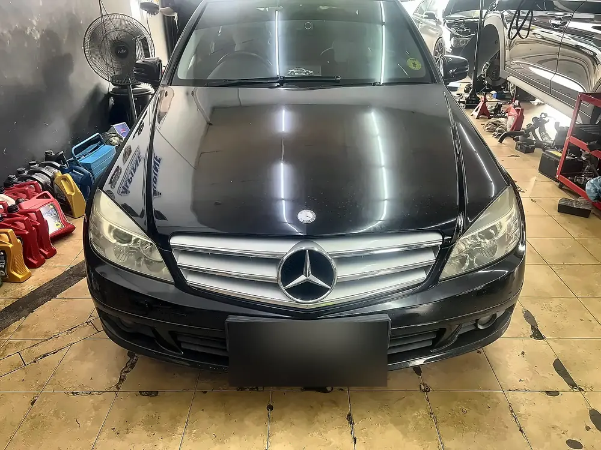
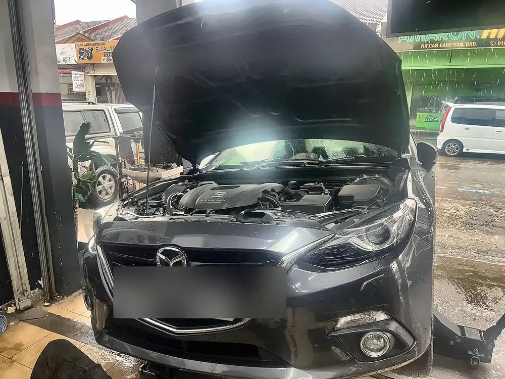
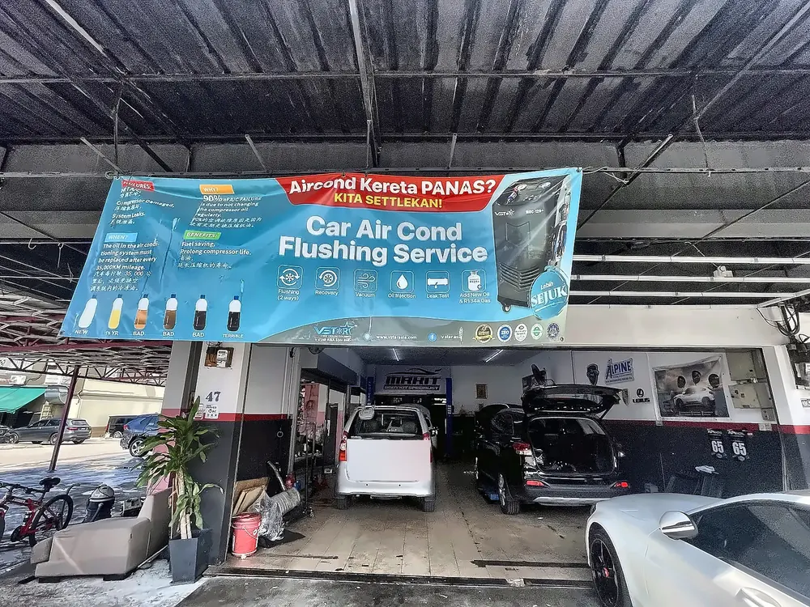
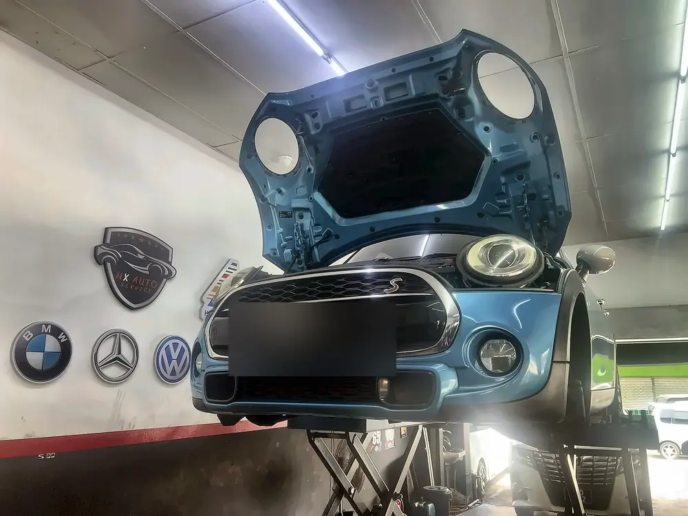
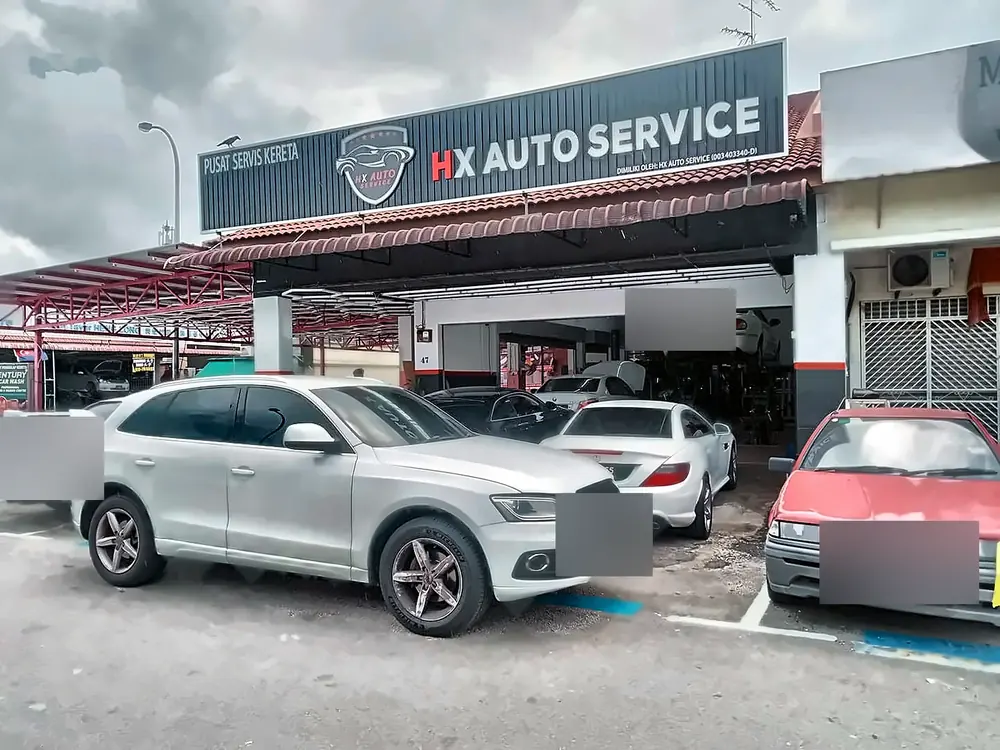

Car services at our Bukit Indah workshop
Eight kinds of work, one workshop in Taman Bukit Indah. Pick the one that fits, or just WhatsApp us what the car is doing.

Computer diagnostics and coding
Computer diagnosis, scanning and coding. We read the fault codes, explain them in plain words and quote before we repair.
See what we check
Service and oil change
Oil change and general servicing. We check filters, fluids and wear items, tell you what we see and quote before extra work.
See what we check
Engine and transmission
Engine and transmission diagnosis and repair. We find the real cause, explain it clearly and quote before any work starts.
See what we check
Aircond
Aircond checking, flushing and repair. We find why it is not cold, explain it plainly and quote before any work.
See what we check
Brakes, suspension, tyres and alignment
Brakes, suspension, tyres and alignment. We check how the car stops and handles, explain it clearly and quote first.
See what we check
Battery and electrical
Battery testing and electrical repair. We check starting and charging, find the fault and quote before we replace anything.
See what we check
Undercarriage check
Undercarriage check for suspension, steering, exhaust, leaks and wear. We show you what we find and quote before repairs.
See what we check
Towing and recovery
Recovery towing service to our Taman Bukit Indah workshop. Call or WhatsApp with your location and we take it from there.
See what we check
Tap a part of the car
Brakes
Brake system checks and repair: squeal, judder or a soft pedal.
Brakes, suspension, tyres and alignmentTyres
Tyres and wheel alignment when the car pulls or the tyres wear unevenly.
Brakes, suspension, tyres and alignmentBattery
Battery service and electrical repair for slow starts and dead circuits.
Battery and electricalUndercarriage
An undercarriage check on the lift: leaks, mounts, exhaust and rust.
Undercarriage checkTell us what your car is doing
Send the model, year and what you notice. We reply on WhatsApp.